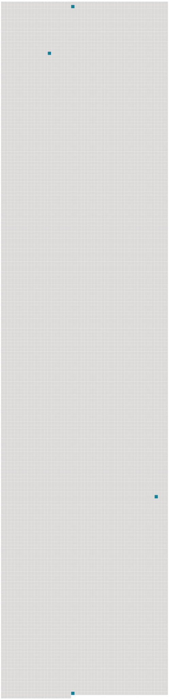

Longueur nb maillons : 4 mentions |
 |
Après avoir été la favorite d’ un roi, l’ amie d’ une reine, l’ idole de la cour la plus brillante de l’ univers, dès que le devoir a parlé, elle a été au-devant de la disgrâce, elle s’ est retirée du monde, elle a caché et comme enseveli sous les voiles et dans l’ ombre de la vertu les dons les plus rares que [Dieu] ait jamais départis à une créature humaine. [14 phrases] Elle aussi elle se sentit appelée à y jouer un rôle, et depuis elle racontait plaisamment qu’ à douze ou treize ans, unissant déjà la plus sincère piété à cette ardeur de l’ âme qu’ on appelle l’ ambition, elle s’ enfermait dans sa chambre pour prier [Dieu] de la faire aller à la cour. [171 phrases]
Elle retrouva dans un petit endroit auprès de sa chambre la fille qu’ elle y avait mise en sentinelle avant de partir, afin que, si le roi, passant près de là pour aller à la messe, demandait de ses nouvelles, on ne manquât pas de lui dire que, s’ étant trouvée un peu mal la nuit, elle reposait encore ; mais, quand elle fut dans sa chambre, et qu’ elle réfléchit à l’ aventure qu’ elle venait de courir, elle en fut épouvantée : la jeune fille modeste remplaça l’ héroïne, et elle tomba à genoux pour remercier [Dieu] de l’ avoir conduite et protégée. [60 phrases] Mais puisque [Dieu] vous fait avoir en cet accident la résignation que vous avez eue en tant d’ autres, je ferois injure à la Providence et à votre courage, si je croyois que mes disgrâces et mes déplaisirs pussent donner quelque atteinte à votre santé et à votre repos. |
 |
La ressource peut être téléchargée sur la page Ortolang
Si vous avez des questions ou vous voyez des erreurs, merci d'envoyer un mail à silvia.federzoni89@gmail.com
Site développé par S. Federzoni (contact)